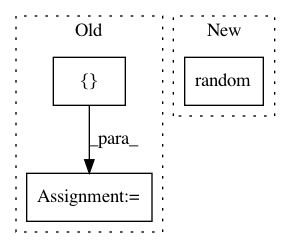

8202e627c7d7897728d824c84a6d479ca84a9098,tests/keras/backend/backend_test.py,TestBackend,test_slice,#TestBackend#,1756
Before Change
])
def test_slice(self, x_size):
npt = np.array([[[1, 1, 1], [2, 2, 2]],
[[3, 3, 3], [4, 4, 4]],
[[5, 5, 5], [6, 6, 6]]])
x_start = [1, 0, 0]
tft = K.constant(npt)
test_input = K.eval(K.slice(tft, x_start, x_size))
expected = KNP.slice(npt, x_start, x_size)
assert np.allclose(test_input, expected)
@pytest.mark.skipif(K.backend() != "tensorflow",
After Change
check_single_tensor_operation("slice", shape, WITH_NP,
start=start, size=size)
with pytest.raises(ValueError):
K.slice(K.variable(np.random.random(shape)),
start=[1, 0, 0, 0], size=size)
@pytest.mark.skipif(K.backend() != "tensorflow",
In pattern: SUPERPATTERN
Frequency: 4
Non-data size: 3
Instances
Project Name: keras-team/keras
Commit Name: 8202e627c7d7897728d824c84a6d479ca84a9098
Time: 2019-03-25
Author: me@taehoonlee.com
File Name: tests/keras/backend/backend_test.py
Class Name: TestBackend
Method Name: test_slice
Project Name: riga/tfdeploy
Commit Name: df38756fb9220bd605acc3e8d5fd42f7f43c3a1e
Time: 2016-03-10
Author: marcelrieger@me.com
File Name: tests/test_ops.py
Class Name: OpsTestCase
Method Name: random
Project Name: nipy/dipy
Commit Name: 85a5d2bd47853660df544d3d0957b7be4ad9fd6e
Time: 2018-08-17
Author: guillaume.theaud@gmail.com
File Name: dipy/tracking/utils.py
Class Name:
Method Name: random_seeds_from_mask
Project Name: UFAL-DSG/tgen
Commit Name: a886baab6b48d976f0b30addde5e588282de072f
Time: 2016-05-17
Author: odusek@ufal.mff.cuni.cz
File Name: util/select_pairs_for_ab.py
Class Name:
Method Name: main